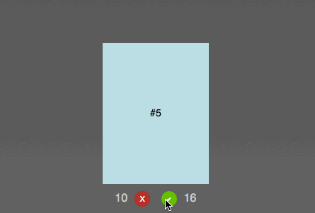
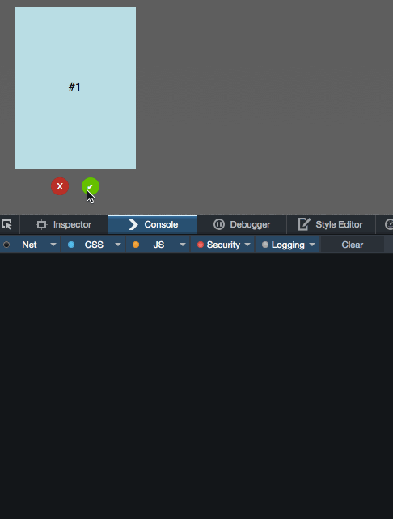

Tinder is a very successful dating app, and one of its features is a way to say yes or no to prospective partners by swiping right or left or pressing a yes or no button. The interface is cards that drop when you press the buttons.
As with any successful interface, a lot of clones that mimick them happen very fast. One of those is FontFlame - a Tinder for Font Pairings. When I saw this one, I thought the animation isn't right (it just moves to the right or left and fades, there's no turning or popping up). I tried to fix the CSS animation to match more closely what Tinder is doing, but to my dismay I found out that whilst Fontflame uses CSS animations, they get over-ridden by jQuery ones. I contacted the author and offered my CSS animation to replace the current one.
Just for fun, I packed this up into a quick solution consisting of a CSS animation and some JavaScript to control the voting process.
I called it Tinderesque. You can see it in action, Get the code and read the instructions how to use it on GitHub.
Here's some explanations on how Tinderesque works.
Animating the cards is no rocket science: we rotate the card after setting the transformation origin to the bottom of the card and you shift it up a bit to get a "discard" effect.
First up, we need to define the HTML of the collection of cards we want to vote on. This should be pretty straight forward:
<div class="cardcontainer list">
<ul class="cardlist">
<li class="card current">#1</li>
<li class="card">#2</li>
<li class="card">#3</li>
<li class="card">#4</li>
<li class="card">#5</li>
<li class="card">#6</li>
</ul>
<button class="but-nope">X</button>
<button class="but-yay">✔</button>
</div>
To achieve the animation effect we need to give the card we want to animate some dimensions and set its transform origin to its bottom:
.card {
width: 150px;
height: 200px;
display: block;
background: #666;
transform-origin: 50% 99%;
}
This ensures that the card doesn't get rotated around its centre but the bottom instead.
For the positive scenario, we rotate the card clockwise and push it up a bit to get the discard effect. This can be done using a rotate and translateY transformation. We also animate the opacity of the card from 1 to 0, effectively hiding it.
@keyframes yay {
from {
transform: rotate(0deg);
opacity: 1;
}
to {
transform: rotate(40deg) translateY(-80px);
opacity: 0;
}
}
For the negative use case, we rotate the card counter-clockwise:
@keyframes nope {
from {
transform: rotate(0deg);
opacity: 1;
}
to {
transform: rotate(-40deg) translateY(-80px);
opacity: 0;
}
}
We then trigger these animations by adding and removing classes on the parent elmement of the cards:
.cardcontainer.yes .card {
animation: yay 0.7s ease-out;
}
.cardcontainer.nope .card {
animation: nope 0.7s ease-out;
}
In order to go through the card deck two things must happen:
By default, we hide all the cards in the deck. Only the one with the class of current is visible:
.list .card {
display: none;
}
.list .current {
display: block;
}
This means that we need to shift the class of current to the next card once this one has been approved or discared. But first, we need to trigger the animation. In order to achieve this, we need either a hover or some clever trickery with checkboxes in CSS. It is more extensible though to use JavaScript.
All we need to trigger the animations is adding an event handler attached to the buttons in the HTML. Depending on which button was pressed we add a yes or nope class to the parent element of the button - in this case, the cardcontainer DIV.
function animatecard(ev) {
var t = ev.target;
if (t.className === 'but-nope') {
t.parentNode.classList.add('nope');
}
if (t.className === 'but-yay') {
t.parentNode.classList.add('yes');
}
}
document.body.addEventListener('click', animatecard);
We're using event delegation here with a click handler on the body of the document. We can of course extend this to pointer or touch handlers to allow for touch events and simulating swipe gestures.
Our card has now been animated and is invisible, but it is still in the document and the next card isn't visible yet. We need to remove the card and shift the current class to the next card in the deck.
Every CSS animation has an animationend event we can use for that. The event gives us the name of the event, which gives us the name of the class to remove.
function animationdone(ev) {
// get the container
var origin = ev.target.parentNode;
// remove the appropriate class
// depending on the animation name
if (ev.animationName === 'yay') {
origin.classList.remove('yes');
}
if (ev.animationName === 'nope') {
origin.classList.remove('nope');
}
// if any of the card events have
// ended…
if (ev.animationName === 'nope' ||
ev.animationName === 'yay') {
// remove the first card in the element
origin.querySelector('.current').remove();
// if there are no cards left, do nothing
if (!origin.querySelector('.card')) {
// no more cards left -
// TODO other functionality
} else {
// otherwise shift the 'current' class to
// the next card
origin.querySelector('.card').
classList.add('current');
}
}
}
document.body.addEventListener(
'animationend', animationdone
);
That's more or less all we need to do. Except that Safari still hasn't joined us in the year 2015. That's why we need to repeat both the CSS animation definitions in our CSS with -webkit- prefixes and add an event handler for webkitAnimationEnd. I refuse to do so here, as this is depressing, but you can see it in the tinderesque source code.
The functionality now is pretty basic, which means we want to make it as easy as possible to extend it. The simplest way to do that is to add Custom Events that fire when things happen to our card deck. This is as easy as using this function:
function fireCustomEvent(name, payload) {
var newevent = new CustomEvent(name, {
detail: payload
});
document.body.dispatchEvent(newevent);
}
Custom events can get a payload - you can define what the listener gets as parameters. In the case of tinderesque, the animatecard function has been extended to send a reference to the button that was clicked, its container element (in case you have several decks) and a copy of the current card.
function animatecard(ev) {
var t = ev.target;
if (t.className === 'but-nope') {
t.parentNode.classList.add('nope');
fireCustomEvent('nopecard',
{
origin: t,
container: t.parentNode,
card: t.parentNode.querySelector('.card')
}
);
}
if (t.className === 'but-yay') {
t.parentNode.classList.add('yes');
fireCustomEvent('yepcard',
{
origin: t,
container: t.parentNode,
card: t.parentNode.querySelector('.card')
}
);
}
}
This allows you to read the content of the card before it gets removed from the document.
var b = document.body;
b.addEventListener('nopecard', function(ev) {
console.log(
ev.detail.card,
ev.detail.card.innerHTML
);
});
b.addEventListener('yepcard', function(ev) {
console.log(
ev.detail.card,
ev.detail.card.innerHTML
);
});
Tinderesque also fires a custom event called deckempty when the last card got removed from the list. In the demo page this is used to re-stack the deck:
var b = document.body;
b.addEventListener('deckempty', function(ev) {
var container = ev.detail.container;
var list = container.querySelector('.cardlist');
var out = '<li class="card current">#1</li>';
for (var i = 2; i < 6; i++) {
out += '<li class="card">#' + i + '</li>';
}
list.innerHTML = out;
});
This should get you well on the way to build your own Tinder-like interface. If I find the time, I will record a screencast doing exactly that.